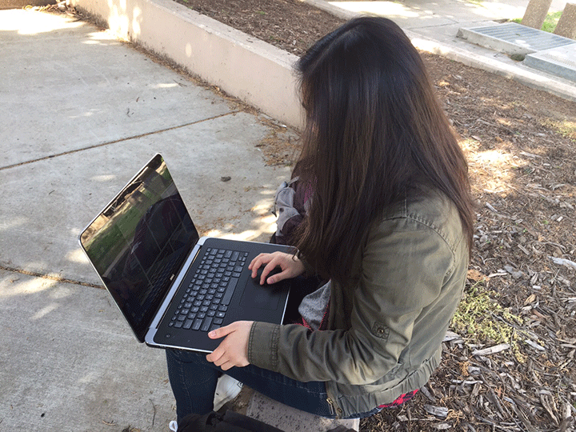

Needs a way...
- To allow the user to go back to the home page
- Description about what the cite is about
- To not block the whole page with content
- Hierarchy, especially for the title
- Consistent layout
- Timeline
- When hover, viewer knows to click
- To stay inclined with color
- Limit the amount of reading
- Filter through messages